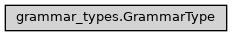

GrammarType
- class ase2sprkkr.common.grammar_types.GrammarType(prefix=None, postfix=None, format='', default_value=None, condition=None, after_convert=None, description='')[source]
Base class for definition of configuration option types
A type without value (e.g. Separator) are just syntactical elements in the potentials file, that do not carry an information. Such elements do not yields (name, value) pair during parsing the file.
Do not confuse this with GrammarType.missing_value functionality. Missing_value is just the opposite: missing_value can be ommited in the file (or even the absence of the name in the file carry the information, that the Flag is False), but the name-value tuple of such Type is present in the parse result. On the other hand, has_value = False is in the file, but not in the result.
The functions called during…
User input: convert, validate Output: string -> _string Parsing: parse -> ( <_grammar parse actions>, validate(why='parse') )
Class hierarchy
Constructor
- Parameters
prefix (Optional[str]) –
postfix (Optional[str]) –
format (str) –
default_value (Any) –
condition (Optional[Callable[[Any], Union[bool, str]]]) –
after_convert (Optional[Callable[[Any], Any]]) –
- __init__(prefix=None, postfix=None, format='', default_value=None, condition=None, after_convert=None, description='')[source]
Create the object.
- Parameters
prefix (Optional[str]) – The string, that will be printed before the value
postfix (Optional[str]) – The string, that will be printed after the value
format (str) – The (python) format string, that will be used for printing the value. The format is passed as format argument to
str.formatroutine.default_value (Optional[Any]) – The default value of the options of this type.
Nonemeans no default value.condition (Optional[Callable[[Any], Union[bool, str]]]) – Function, that check the validity of the value. It should return
Truefor a valid value, andFalseor string for invalid. The string is interpreted as an error message that explains the invalidity of the value.after_convert (Optional[Callable[[Any], Any]]) – Function, that - if it is given - is applied to the (entered or parsed) value. The function is applied on the result of the
convertmethod
- has_value = True
- name_in_grammar = True
Default value for ValueDefinition.name_in_grammar. Some types (e.g. Tables) commonly have no name (are identified by its position in the potential file) – such type could redefine this class property.
- numpy_type
The numpy dtype of the array, that contains values of this type (see e.g.
Array). The default typeobjectcan and should be redefined in the descendatns.alias of
object
- prefix
The string, that will be printed before the value
- postfix
The string, that will be printed after the value
- format
The (python) format string, that will be used for printing the value. The format is passed as format argument to
str.formatroutine.
- default_value = None
Default value for the given type. It can be overriden for particular instances in the constructor (or just by setting the attribute of an instantiated object).
- static is_the_same_value(a, b)[source]
Comparison function for the values of “this type”.
Not all values (e.g. numpy arrays) can be compared by equal sign, so this function has to be used for comparison of the values.
- grammar(param_name=False)[source]
Return a pyparsing grammar for the type
- Parameters
param_name (str) – The name of the value, that can be assigned to the generated grammar element.
- grammar_name()[source]
Human readable expression of the grammar. By default, this is what is set by grammar.setName, however, sometimes is desirable to set even shorter string
- transform_grammar(grammar, param_name=False)[source]
The chance for the resulting class to alter the resulting prefixed grammar
- missing_value()[source]
Is the configuraion value a flag? I.e., can be =<value> ommited in the configuration?
- Returns
can_be_ommited (bool) – Is an ommision of the value possible, e.g. the option is given as Flag (only by name of the option)
default_value – The value used if the value is ommitted
do_not_output_the_option – The value, for which the variable should not be outputed at all (e.g. False for a flag)
- validate(value, param_name='<Unknown>', why='set')[source]
Validate either the pyparsing result or a user given value.
Do not override this method in subclasses for the validation implementation, this method calls
_validate(), which should contain the actual validation- Parameters
value (mixed) – Value to be validated.
param_name (str or callable) – Parameter name to be used in possible throwed exception (Optional). If it is callable, it should be a function that returns the param_name.
why (str) –
Possible values are:
setvalidation value setted by user (in rare cases, such value can be incomplete and requires completing during
set_from_atomscall before saving the output)parsevalidation during parsing input file, checks enforced by the grammar can be skipped
savevalidation before saving the values
- _string(val)[source]
The string method do some additional transformation (add prefix, postfix etc.), so the actual way how to convert the value for the output should be here.
- string(val)[source]
Convert the value to the string according to the class definition. Do not redefine this function, redefine the
_string()method instead, to retain the common functionality (as adding prefix or postfix to the resulting string).
- enrich(option)[source]
Some types can add properties to the options that have the type, e.g. see Sequence.enrich, which adds the ability to access the items of the sequence using []
- additional_description(prefix='')[source]
If the description of the type does not fit on one line, this method should return
- Returns
The additional description (e.g. possible choices) of the type. Multiline string.
- Return type
additional_description
- type_validation(value, types, typename=None)[source]
- Parameters
value (mixed) – Value to be checked
types (Union[List[Type], Type]) – The required type or types. If more types is given, it is sufficient, if the value is of any of given types.
typename (Optional[str]) –
- Returns
error_message – The function returns either False, if the value is ok, or string containing an error message describing the error.
- Return type
Union[str, bool]